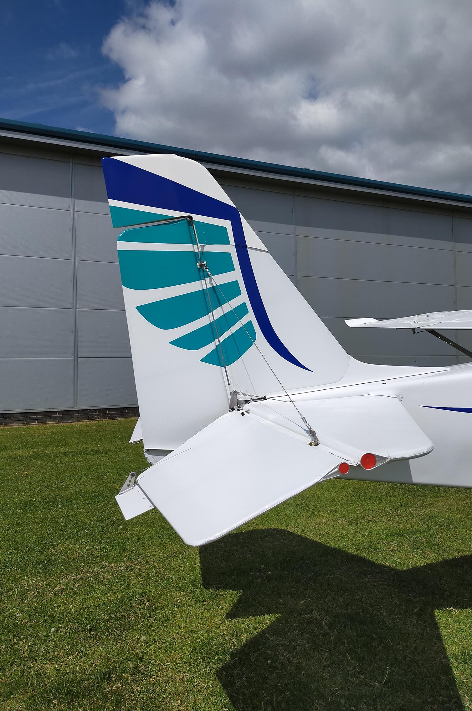
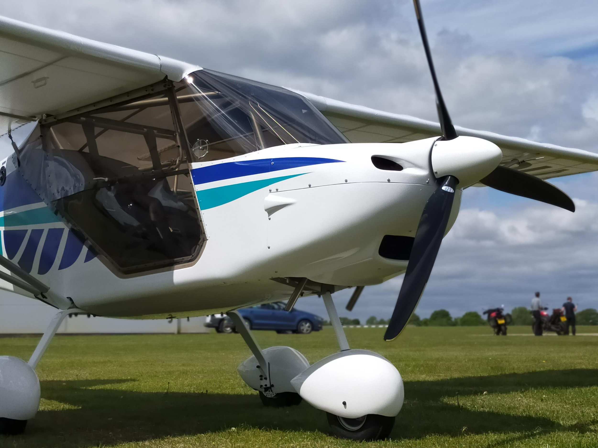

Fly A Champion!
The Skyranger quickly proved itself a very capable airplane, finding favor with flying schools and novice pilots for its easy flying characteristics and docile stall. What may be surprising is that it also found favour with top pilots, and has had remarkable success in national and international competitions. Its successes include:
- 1996 — Skyranger wins Gold medal FAI World Championships — Phillippe Zen
- 1999 — Skyranger wins Gold medal FAI World Championships — Phillippe Zen
- 2002 — Skyranger wins Silver medal FAI European Championships — Paul and Dawn Dewhurst
- 2003 — Skyranger wins Gold medal FAI World Championships — Paul Dewhurst and Oliver Neece
- 2004 — Skyranger wins Silver medal FAI European Championship — Paul and Dawn Dewhurst
- 2005 — Skyranger wins Gold medal FAI World Championships — Paul and Dawn Dewhurst
- 2006 — Skyranger wins Gold medal FAI European Champion — Paul Dewhurst and Oliver Neece
- 2007 — Skyranger wins Gold medal FAI World Championship — Paul Dewhurst and Paul Welsh
- 2008 — Skyranger wins Gold medal FAI European Championship — Paul Dewhurst and David Hadley
- 2010 — Skyranger wins Silver medal FAI European Championship — David Broom and Chris Levings
- 2011 — Nynja First and Second place Round Britain Rally — Rob Grimwood and John Waite, Paul Dewhurst and Mark Fowler
- 2012 — Nynja wins Silver medal FAI World Championship — Paul Dewhurst and David Robbins
- 2012 — Nynja wins Bronze medal FAI World Championship — Rob Grimwood and John Waite
- 2013 — Nynja wins Gold medal FAI European Championship — Rob Grimwood and John Waite
- 2014 — Nynja wins Gold medal FAI World Championship — Rob Grimwood and John Waite
- 2016 — Nynja wins Gold medal FAI World Championship — Paul Dewhurst and Paul Welsh
So why does the Skyranger and now the Nynja do well at competitions? The competitions are based on three things — navigation, precision landings (including short takeoff and landing), and economy. The Skyranger and Nynja have excellent visibility and a flexible speed range, so are good for navigation and spotting features and markers. They have good STOL characteristics and easy handling, so are normally at the top of the table for the precision tasks.
They aren't quite as slippery and glider-like as some of the exotic composite machines, but do surprisingly well for distance economy and will thermal well. The best thermal result was in the 2008 European championships where Paul and David flew for 7.5 hours on just 15 liters (4 gallons) of fuel, spending more than 4 of those hours with the engine off completely! This feat was matched in 2014 with the Nynja flown by Rob and John, again flying for over 7 hours on the same 15 liters of fuel.
Really it is the good all-round flight and performance characteristics and handling that have made the Skyranger series the steed of choice for international competition pilots. And you don't have to be a top competition pilot to benefit either. These characteristics make the Skyranger and Nynja great all-rounders for the average recreational club and family flier too. Good short field performance, visibility, economy and flexibility of operation are features we can all enjoy.
The Skyranger also has construction that lends itself towards easy modification, and can also be built very light. Below — Rob Grimwood's Competition special Nynja, modified in 'rally car' style. Stripped of all but essentials, built light and with extra glazing — not for those who tend towards vertigo!


